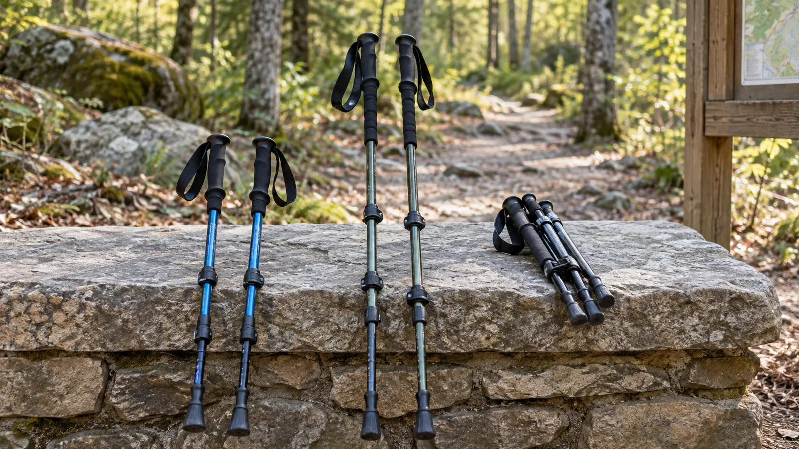

TRAIL GEAR · CONTROL BEFORE CARBON
Kids’ Trekking Poles: Adjustable vs Fixed vs Folding—and When to Skip Them
A pole is useful only when the child can set it down deliberately, keep the tip away from people and operate the lock without turning the hike into equipment class.

Start with the no-buy test
Take the child on the actual class of trail without poles first, at a conservative distance. If the child walks comfortably, keeps hands free when needed and manages roots and grades without repeated balance problems, poles may add noise and swinging hazards rather than value. Shorten the hike before buying hardware to rescue a plan that is too long.
Use the first-hike guide to set distance and turnaround. Poles do not make wet rock, ice, loose scree, cliffs or stream crossings safe. They do not replace footwear that fits; check the kids’ footwear guide first.
Three categories, three different compromises
Adjustable telescoping poles
These use two or more sliding sections with lever locks or twist-style mechanisms. The useful advantage is real length adjustment as a child grows or changes from level trail to a long descent. The penalty is more parts, more ways to set the sections unevenly and the need to inspect every lock.
Fits: growing children, shared family gear and routes where a shorter descent setting may help. Skip: when the minimum usable length is still too long, the child cannot operate the locks correctly or the lower section can be pulled beyond the maker's stop mark.
Fixed-length poles
A fixed pole has fewer adjustment points and can feel predictable. Fit is unforgiving: a length that works now may not work after a growth spurt, and adult sizing shortcuts do not become correct because the pole is light. Some fixed poles are sold for running rather than family hiking; the strap, grip and tip may reflect that job.
Fits: an experienced child with a confirmed current length and a repeatable use case. Skip: as a blind gift, for siblings of different heights or when return terms do not permit a careful fit check.
Folding or Z-style poles
Folding poles pack short and can ride inside or beside a daypack. Their segment connections, tension system and limited adjustment range vary by model. Compact storage does not prove kid fit or strength. Some are designed around adult grips and longer minimum lengths.
Fits: families who genuinely need compact storage and can verify every connection. Skip: when the child treats assembly as a toy, the segments do not seat fully, or a telescoping pair provides easier visible inspection.
Compatibility checks before buying
- Usable length: follow the manufacturer’s sizing method and range. Do not use one universal elbow angle as a warranty of fit; terrain and technique change the job.
- Minimum length: confirm the pole can become short enough without hiding or exceeding stop marks.
- Grip: the child must close the hand comfortably without squeezing an adult-sized handle.
- Lock: an adult should set and test it. Follow the maker’s torque or tension instructions; tighter is not automatically safer.
- Strap: know how the maker instructs it to be used and released. In brush, moving water, scrambling or any snag hazard, local conditions may make straps the wrong choice.
- Tip and basket: confirm the surface and land manager’s rules. Rubber protectors can reduce damage on hard surfaces; snow or mud baskets are not universal trail accessories.
- Pack fit: secure poles so tips and handles cannot strike another person or catch while climbing into the vehicle.
Aluminum versus carbon
Material is not the first decision. Aluminum models often cost less and may bend visibly under overload; carbon models can be lighter but can fail differently after impact or damage. Exact strength, warranty and inspection rules belong to the manufacturer, not to a category stereotype. Never straighten, glue or improvise a damaged pole unless the manufacturer explicitly provides that repair.
For a growing child, correct range, secure locks, comfortable grip and replaceable parts usually matter more than shaving a small amount of weight. A bargain pole with a slipping lock is not a bargain.
The parking-lot fit and behavior test
Set both poles to the maker’s starting length on level ground. Check that section markings remain within limits and that locks resist firm downward loading without slipping. The child then walks, stops, turns and carries the poles together with tips controlled. If the tips cross feet, swing behind the body or point toward siblings, stop and teach before entering the trail.
Practice four rules: tips stay on the ground behind the next person; poles stop moving when people bunch up; poles are carried in one controlled bundle when not in use; and no one uses them as swords, vaulting tools or probes near animals.
Trail technique without fake precision
On level ground, use a relaxed alternating rhythm only if it feels natural. On a descent, plant deliberately before transferring weight and keep the body controlled; do not reach so far that the pole becomes a crutch. At steps, bridges, ladders, handrails or scrambling sections, stow the poles when hands are safer and follow the land manager's instructions.
Never rely on a pole to test deep water, unstable ice or a drop-off. Stream conditions can change quickly. Turn around rather than using a child's gear as an excuse to enter moving water.
Inspection and storage
Before every hike, inspect shafts, joints, locks, straps, grips, tips and baskets. Clean and dry the poles according to the maker’s manual. Dirt inside sections can damage mechanisms, and trapped moisture can corrode components. Retire a pole with a crack, damaged lock, bent section or connection that will not seat securely until the manufacturer or qualified retailer evaluates it.
Store dry, out of direct heat and where children cannot play with exposed tips. Recheck length after growth spurts and before lending them to another child.
Cost and honest purchase intent
Prices, stock and model ranges change. Compare usable length, packed length, per-pair weight, lock type, replacement-tip availability, return terms and the exact warranty. The Amazon category links below use the site's approved affiliate account and compare categories, not winners. No hands-on testing, current price, stock, rating or certification is claimed.
Who should skip poles
Skip them for crowded boardwalks, indoor attractions, children who swing gear, routes that require frequent hand use, or any trip where adults cannot supervise fit and behavior. A single pole is not automatically easier; it creates an asymmetric pattern that may or may not fit the child. When in doubt, shorten the route and keep hands free.
Manufacturer and trail checks
- Black Diamond official product instructions
- LEKI official service and fitting information
- National Park Service hiking-safety guidance
- U.S. CPSC recall search
MAKE THE WEEKEND COUNT
Useful beats heroic.
Build the day your family can finish well, then leave enough energy for the ride home.
More family plansTHE USEFUL STUFF
Gear that removes friction.
These are practical categories to compare—not a reason to overpack. Check fit, specifications and current reviews before buying.
Paid links: As an Amazon Associate I earn from qualifying purchases. You pay no additional cost.
Adjustable trekking poles for kids
Verify the minimum usable length, grip size, lock security, section markings and current return terms for the actual child.
See current options → COMPARE ON AMAZONYouth aluminum trekking poles
Compare usable range, pair weight, lock type, replacement tips and the manufacturer’s inspection instructions.
See current options → COMPARE ON AMAZONCompact folding trekking poles
Choose folding construction only after confirming the seated connections, tension system, packed length and child-sized usable range.
See current options →